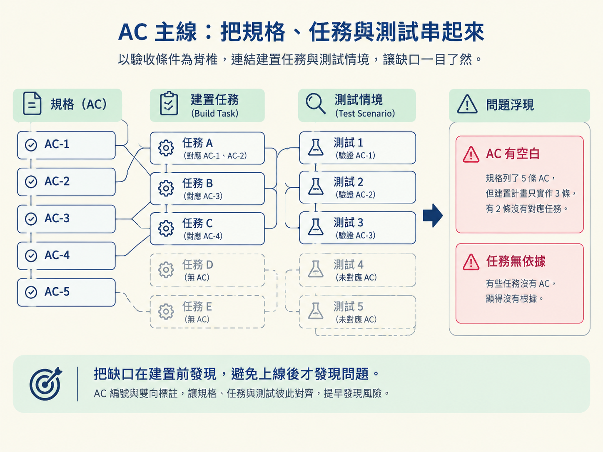

看完這一節，你應該能認出規格的段落順序，分辨 build spec 與 decision record 各自服務的讀者，並說明 AC 主線、Options 必須附上 con，以及 decision-only spec 不該包含哪些內容。
上一節你已經知道規格會放在 docs/specs/，也看過單檔與目錄兩種形狀。現在把檔案打開：這些段落為什麼要這樣排？每一段到底是寫給誰看的？
規格其實同時面對兩種讀者。第一種是執行建置的 /develop。它要依照規格把功能做出來，因此最關心的是「要做什麼」：驗收條件、設計決定，以及需要建立的任務。
第二種讀者，可能是半年後回頭查帳的你，也可能是剛加入團隊的同事。他想知道的是「當初為什麼這樣選」。如果把這兩種資訊混成一團，建置時就得載入一大段推理，浪費 context；如果乾脆把推理刪掉，未來的決定又會變成沒有來由的黑盒子。
因此，規格用固定的段落順序把兩種內容分開。你可以把它想成一棟有清楚分區的房子：建置資訊放在工作區，決策脈絡放在查帳區；兩者同在一份規格裡，卻不必每次一起搬進 context。
規格的順序不是排版習慣，而是閱讀與建置流程的一部分。它從 ## Summary 開始，接著是 ## Context、## Requirements、## Options considered、## Decision、## Rationale；接下來依規格模式放入設計段，最後是 ## Build plan、## Consequences、## Follow-up 與 ## References。
部分段落只會在特定模式出現：
## Feature design。## Proposed stack。## Standard definition。## Migration plan。這些設計段都固定接在 ## Rationale 後面。它們各自要寫什麼，下一節會逐一處理；這裡先記住它們在骨架中的位置。
## Summary 必須放在第一個，而且要用白話寫。它是所有人的快速導讀，兩到四句話說明三件事：這次決定是什麼、為什麼這樣決定，以及對建置有什麼影響。
不論讀者懂不懂技術，都應該能在二十秒內抓到重點。Summary 不要放到檔案最後當結論，因為每個人打開規格時都會先看到它。它的任務就像地圖上的定位點：先讓人知道自己要去哪裡，再決定要不要深入細節。
把段落按照讀者分類後，界線會很清楚。
| 受眾 | 段落 | 回答的問題 |
|---|---|---|
建置規格（/develop 讀） | Requirements、Decision、設計段、Build plan、Consequences | 要做什麼（WHAT） |
決定記錄（人讀，/develop 跳過） | Context、Options considered、Rationale、References | 為什麼這樣選（WHY） |
## Summary 屬於建置規格這一側，但它也兼任給人的快速導讀。## Requirements 裡的驗收條件（acceptance criteria）就是合約：/develop 依照它建置，/check verify 依照它核對。
設計段描述決定本身，## Build plan 把決定轉成有順序的任務，## Consequences 則列出建置時必須遵守的限制。這些內容回答的是「最後要交付什麼，以及交付時不能違反什麼」。
單檔規格裡，兩種受眾共用同一個檔案，決定記錄的段落會直接寫在檔案中，但要保持精簡。目錄規格則把兩者拆成兩個實體檔案：
index.md。rationale.md。拆檔不代表刪除推理，而是把推理搬到建置時不會讀取的位置。這就是 progressive disclosure 的實際作用：需要執行時先看必要內容，需要追查決定時再展開完整脈絡，避免每次都把全部 context 一起塞進來。

驗收條件是整份規格的脊椎。它們放在 ## Requirements，每條都有編號，例如 AC-1、AC-2。每一條都必須描述一個可觀察、可獨立檢查的結果。
「支援登入功能」就不夠具體，因為完成與否無法直接判斷。好的 AC 應該讓建置者知道要交付什麼，也讓驗證者知道要檢查什麼。
所謂 AC 主線，是指所有內容都要沿著驗收條件彼此對齊：
這條規則用來阻止規格漂移。常見的失敗模式是：規格列了五條驗收條件，建置計畫只實作三條，另外兩條在過程中悄悄消失。若測試又只驗證已完成的三條，結果看起來可能是綠燈，實際上卻只是假綠測試。
AC 編號與雙向標註會把這個漏洞攤在桌面上：缺少任務的 AC 會留下空白，沒有 AC 的任務也會顯得沒有根據。這讓問題可以在建置前被決定，而不是等到功能上線後才被發現。

驗收條件通常不是憑空寫出來的。如果功能在 scope 上已有一列，它的 intent 與種子驗收條件就會先作為起點，再透過訪談逐步發展成正式 AC。
規格之後會被每一次建置載入，因此冗字不是只有閱讀問題，也會持續增加 context 成本。以下規則的目的，是保留真正有用的資訊，移除重複與空話。
每件事只說一次。同一個判斷不要在 Context、Rationale、Consequences 各說一遍。可以用一個簡單標準檢查：刪掉某段後，如果讀者沒有少懂任何事，那段就應該刪除。
Context 只描述問題，不描述解法。它應該說明目前面對什麼問題、有哪些力量互相拉扯，以及不做決定會造成什麼後果。不要在這一段提前暗示選項，也不要偷偷把答案塞進問題描述裡。
每個選項都要有真正的缺點。在 Options considered 中，要用「這個選項最好的辯護者會怎麼說」的角度公平描述它，但至少也要列出一個真實的 con。
如果某個選項看起來毫無缺點，通常不是它完美，而是描述方式不公平。這種只把其他選項寫得很差、把首選寫得無懈可擊的做法，本質上是稻草人論證。
Rationale 要引用 Context 裡的力量，不要重抄 pros 與 cons。它要回答的是：「為什麼最後選這個，而不是其他選項？」因此必須扣回前面已經寫出的實際拉扯，而不是再做一次選項清單。
Consequences 一定要包含負面項。只有好處、沒有代價的規格不可信。每個決定都有成本；把負面影響寫出來，未來接手的人才知道自己繼承了哪些限制。
一份規格只裝一個決定。如果文件同時包含好幾個彼此獨立的決定，就拆成一個保護傘規格與多份子規格，不要讓單一檔案無限膨脹。
長度應該跟著決定的複雜度走，不要為了湊行數灌水，也不要為了變短而刪掉必要設計欄位。資料模型、狀態機、API 表、安全模型與驗收條件，都不該因為追求短小而被砍掉。
## Decision 裡有一個 Implementation skills 欄位。它用來列出這次設計採用的社群 skill，讓工程師實作時知道應該參考哪些慣例。
這個欄位是指標，不是貼上。它只記錄 skill 的名稱、來源 repo，以及 skill 在專案中的路徑；不要把完整 skill 內容複製進規格。
原因很直接：規格會被反覆載入，貼入整份 skill 只會讓文件變重，而且那些內容本來就有自己的出處。這裡只留下「去哪裡找」的指標，就能在需要時展開，平常則不必讓 context 背著一整份重複內容。
有兩種規格特別容易被寫壞：ARCHITECTURE 的技術棧決定，以及 CROSS-CUTTING 的標準定義。這兩種屬於「決策型規格」，它們不寫 ## Build plan，也不應捏造「規格有記錄到技術棧」這類空洞的驗收條件。
它們的規格本體就是那個決定本身：
## Proposed stack。## Standard definition。真正執行決定的步驟，例如把專案 scaffold 起來，應該歸到執行它的功能，由 /develop 在建置時推導，不要先在決策型規格裡重寫一份。
這樣可以避免同一件工作被兩份規格各寫一次。否則其中一份後來被更新、另一份卻留著舊內容，就會出現兩個互相競爭的真相來源。

最後的 ## References 是選配段落。工程師在訪談時會選擇一個層級：
none：保持乾淨，不寫參考引用。sources：只列出具名的專案來源與實務原則，不附網址。sources+links：在上述內容之外，再加入查證過的網址。無論選哪一級，Rationale 永遠保留。層級控制的只有 ## References 段落，以及文字中的來源標註。
選 none 時，整份規格的推理仍然要寫，只是不掛引用，讓文件保持乾淨。無論採用哪個層級，都不能捏造網址。如果不確定來源是否正確，就寫出來源名稱，不要附上沒有查證的連結。
規格有固定段落順序，Summary第一個寫，而且要用白話說清楚決定、理由與建置影響。段落服務兩個受眾：建置規格（Requirements、Decision、設計段、Build plan、Consequences）回答 WHAT，給/develop讀；決定記錄（Context、Options considered、Rationale、References）回答 WHY，給人讀，/develop跳過。單檔把兩者寫在一起，目錄則拆成index.md與rationale.md。AC 是脊椎，每條都要有編號、可獨立檢查，build task 與測試情境也要雙向對齊，才能避免漏做與假綠測試。寫作時每件事只說一次，Context 只寫問題，每個選項都要有真實 con，Consequences 要寫負面項，一份規格只裝一個決定。決策型規格不寫Build plan，References 可以省略，但來源與網址都不能捏造。
現在你已經能讀懂一份規格的骨架，也能檢查 AC、任務與測試是否接得起來。下一個問題是：當設計對象不同時，這副骨架會怎麼變形？下一節會介紹四種模式，並說明各模式該在什麼情況使用，以及會多出哪一個設計段。